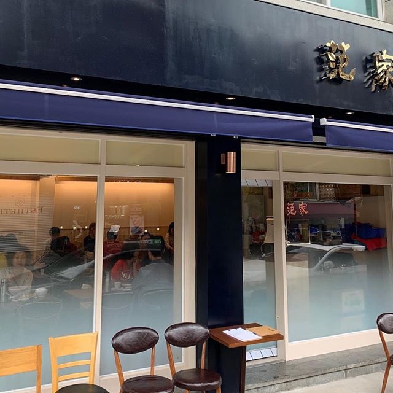
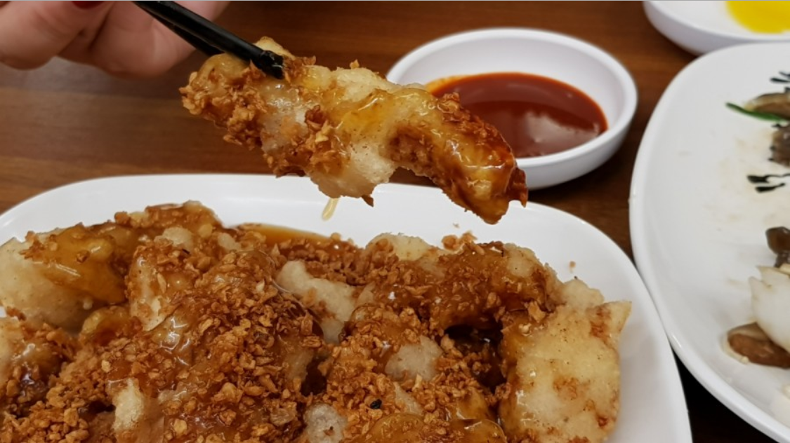
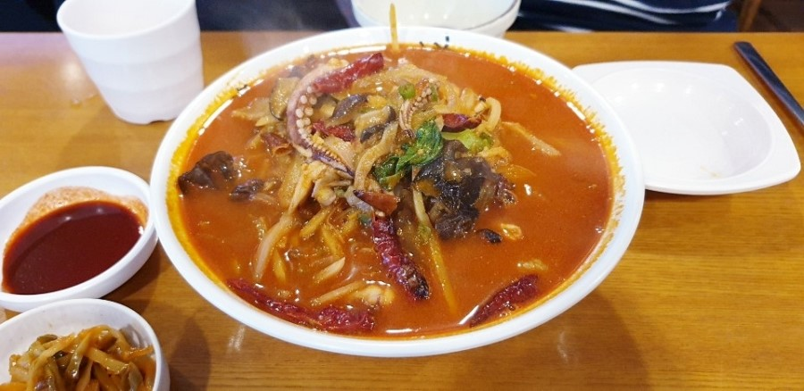

남궁권 - 범가(范家)
주소: 서울 광진구 광장로 58-1
Operation hours: 매일 11:30 - 21:30
Break time: 15:00~17:00

진정한 맛집은 숨겨져 있는 법. 사실 길가에 대놓고 있지만 위치가 광진구 광장동이니 숨겨져 있다고 보는게 맞다. 규모가 그렇게 크지 않아 테이블이 적기 때문에 웨이팅이 좀 있다. 우리 동네에서 손님이 밖에서 웨이팅을 하는 몇 안되는 곳중 하나다. 하지만 두 달쯤 전에 매장 확장공사를 해서 매주 일요일 휴무가 연중무휴로 바뀌고 웨이팅도 조금 널널해졌다. 이전의 지나갈 때에 길막을 당하던 경험은 사라졌다고 봐도 될 정도로. 지나갈 때마다 물 들어올 때 노 잘 젓는다고 감탄한다.

서론은 이쯤 하고, 맛집 소개이니 요리 이야기를 해보겠다. 이곳의 대표메뉴는 꿔바로우다. 필자는 꿔바로우와 탕수육의 차이도 잘 모르는 소위 ‘맛알못’이지만, 먹어야만 살아남는다는 본능은 살아있어 이것 하나는 느낄 수 있었다. 이거, 엄청 맛있다. 입에 넣으면 찹쌀 덕분인지 쫄깃함과 바삭함이 공생하는, 꽤나 모순적인 표현으로 묘사되는 먹기 좋은 식감이 먼저 반긴다. 시지 않고 적당함을 아는듯한 소스와 하얀 튀김 위에 내려앉아 있는 마늘 후레이크도 은근히 잘 어울려 계속 입으로 들어가는 맛을 만들어 낸다. 진짜 먹다가 턱이 아파서 좀 쉬어야겠다 해야 멈출 수 있는 맛인데, 부드러워서 턱이 아프지도 않다. 이렇게 필자의 몸뚱아리에서 20년간 거주한 지방이는 또 새로운 이웃을 맞이했다. 솔직히 메뉴판에 있는 연태고량주와의 조합은 또 어떨지가 궁금했으나, 이걸 필자의 배에 들이부었다간 걸어서 3분거리인 집에 가기가 대륙횡단으로 변모할 것 같아 깔끔히 포기했다.

꿔바로우 외에 개인적으로 추천하고 싶은 메뉴는 짬뽕이다. 아니, 솔직히 전부 다 맛있고 특히 마늘 볶음밥이 꿔바로우 다음가는 것 같지만 이날은 왠지 짬뽕이 끌렸다. 해물짬뽕, 해물백짬뽕, 얼큰해물짬뽕 세 종류가 있는데 얼큰해물짬뽕은 라이터가 고장나 급한대로 입에서 불을 뿜어야 할 때 시도하도록 하자. 이곳 짬뽕의 가장 큰 특징은 엄청난 건더기의 양이다. 9000~10000원이라는 가격을 생각하면 당연하다고 느낄수도 있지만, 평범한 동네 중국집의 짬뽕을 생각하면 안된다. 이곳의 짬뽕은 해물을 포함한 건더기가 면의 2배는 넘는 것 같다. 그래서인지 얼큰한 국물이 또 감탄사를 절로 내뿜게 만들어 주는데, 우리동네 국밥집이 큰 사랑을 받지 못하는 이유가 여기에 있는 것 같다. 국밥 2그릇을 왜먹나? 그 돈으로 뜨끈-한 해물짬뽕 든든-하게 먹고 말지.
참고로 따로 주차를 할 수 있는 공간이 없다. 막무가내로 자가용을 끌고와서 옆에 방치하듯 차를 세워놓는 행위는 피하도록 하자. 대기하는 손님과 버려진 차들을 비집고 피시방을 향하는 선량한 거주민에게 가끔 죄다 밀어버리고 싶다는 충동을 선물해 줄 수도 있으니 말이다. 지금까지 한번 오면 잊을 수 없는 맛집, 범가였다.